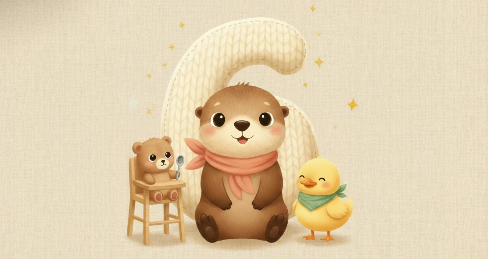
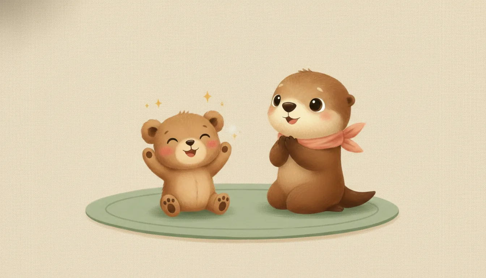
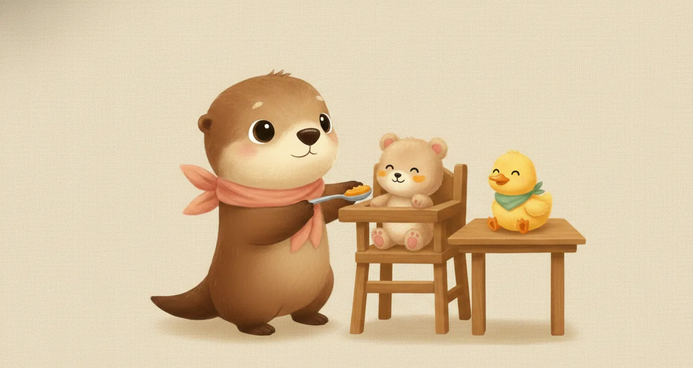
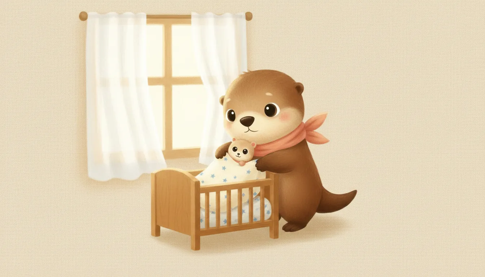
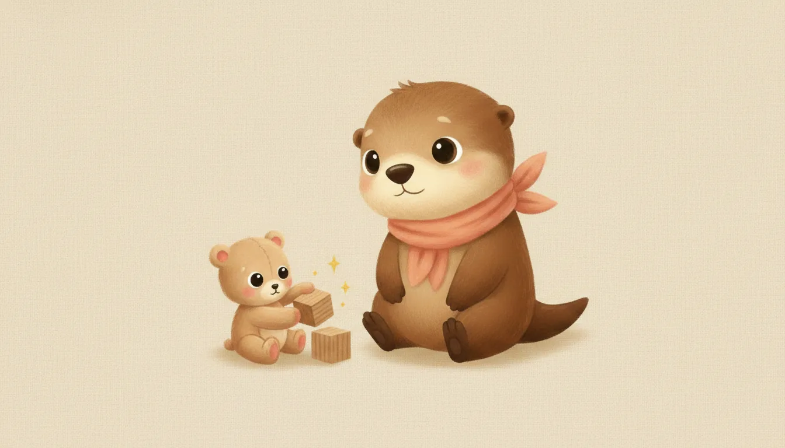
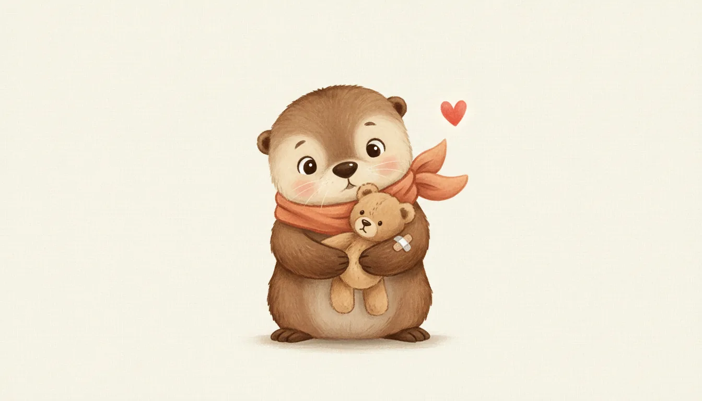

Ebeveynler için · Ay Ay Bebek Rehberi
6 aylık bebek: bu ay sizi ne bekliyor?
6. ay, ay ay rehberimizin en büyük dönüm noktasıdır: anne sütünün yanına ilk kaşık kaşık lezzetler eklenir. Bu sayfa, ek gıdaya nasıl başlanacağını, bu ayın aşılarını, gelişim basamaklarını ve uyku-oyun düzenini tek yerde toplar.
Diğer ayların sayfaları hazırlandıkça buraya eklenecek.

Bir bakışta 6. ay
2 gündüz şekerlemesi
ek gıda başlıyor
başlangıç miktarı
oturma denemeleri
Karma 3.doz + OPA

Gelişim: bu ay bebeğiniz ne yapar?
Aşağıdakiler çoğu bebeğin 6. ayın sonuna doğru yaptıklarıdır; her bebek kendi hızında ilerler, biraz erken ya da geç olması çoğu zaman normaldir.
Hareket
- Kısa süreli desteksiz oturmayı dener; tam sağlam oturma genellikle 7-8. ayda yerleşir.
- Yüzüstünden sırtüstüne ve sırtüstünden yüzüstüne iki yönde de rahatça döner.
- Bir nesneyi bir elden diğerine aktarır, iki eliyle iki nesneyi aynı anda tutabilir.
- Bazı bebekler emeklemeye hazırlık olarak öne-arkaya sallanmaya başlar.
İletişim ve sosyal
- Hece tekrarlarıyla babbling yapar (ba-ba-ba, ma-ma-ma gibi), henüz anlamlı değildir.
- Kendi adına tepki vermeye başlar, tanıdık seslere döner.
- Aynadaki yansımasıyla ilgilenir, gülümser, bazen "konuşur".
- Yabancılara karşı temkinli tavır bu ayda belirginleşebilir — normaldir.

Ek gıdaya başlangıç: bu ayın büyük adımı
6. ay, anne sütünün yerine değil yanına ilk katı gıdaların eklendiği aydır. Üç hazırlık işareti aranır: baş kontrolü, destekle oturabilme ve dil itme refleksinin kaybolması. Bebek keyifli ve dik oturur pozisyondayken, ilk denemeler 1 çay kaşığı gibi küçük miktarlarla, tek bileşenli ve iyice ezilmiş bir püreyle (balkabağı, havuç, elma, armut gibi) yapılır.
- Her yeni besin 3 gün üst üste denenir; bu sırada başka yeni besin eklenmez.
- Öğürme bu dönemde normaldir; sakin kalın, az miktarla yeniden deneyin.
- Anne sütü/mama beslenmesi 1 yaşına kadar birincil besin kaynağı olmaya devam eder; ek gıda onu tamamlar, yerini almaz.
Ayrıntılı yol haritası, tarifler ve besin çeşitliliği için: Ek gıdaya nasıl başlarız?
Bu ayda da asla verilmeyecekler
- Bal: 12 aydan önce bebek botulizmi riski taşır.
- İnek/keçi sütü içecek olarak; tuz, şeker eklenmiş gıdalar.
- Boğulma riski: kabuklu kuruyemiş, üzüm tanesi, çiğ havuç gibi yuvarlak-sert gıdalar.

Uyku düzeni
Toplam uyku süresi günde 12–14 saat civarındadır. Gündüz uykuları birçok bebekte 2 düzenli şekerlemeye doğru toparlanır, gece uykusu uzun bloklar hâlinde sürebilir. Güvenli uyku kuralları değişmeden devam eder:
- Her uykuda sırtüstü yatırın; beşik boş kalmalı.
- Tutarlı bir yatma ve şekerleme rutini ritmi destekler.
- Aynı odada, kendi yatağında uyumaya devam; aynı yatağı paylaşmayın.
Ayrıntı için: Çocuklarda uyku düzeni rehberi.

Oyun ve beyin gelişimi
Eller artık çok daha becerikli; oturma pratiğiyle birlikte dünya yeni bir açıdan keşfediliyor. Beyin gelişimi için en güçlü uyaran hâlâ sizsiniz.
- Nesne aktarma oyunu: Hafif bir küp ya da çıngırağı bir elinden diğerine geçirmesini teşvik edin.
- Desteklenerek oturma pratiği: Yastıklarla çevrili güvenli bir alanda kısa süreli oturma yaptırın; asla gözetimsiz bırakmayın.
- Ce-ee ve isim oyunu: Adına tepki vermeye başladığı için adını söyleyip tepkisini gözlemleyin — bu etkileşim dil gelişimini destekler.
- Konuşun, söyleyin, okuyun: Babbling seslerine durup karşılık verin — bu "servis-karşılama" beyin mimarisini kurar.
- Ekran: Bu yaşta hâlâ önerilmez; 18–24 aydan önce ekran yalnızca görüntülü aile aramasıyla sınırlı tutulmalıdır.

Bu ayın büyük randevusu: 6. ay aşıları
2026 ulusal aşı takvimine göre 6. ayın sonunda iki aşı uygulanır: Karma aşının (Beşli karma, DaBT-İPA-Hib) 3. dozu ve oral çocuk felci aşısının (OPA) 1. dozu. Bu aşılar aile sağlığı merkezlerinde ücretsizdir. Ayrıca 6. aydan itibaren yıllık grip aşısı da önerilir (takvim dışı, ilk yıl iki doz). Ayrıntılı takvim için: Hangi ay hangi aşı?
- Aşı sonrası hafif ateş, huzursuzluk ve iğne yerinde kızarıklık beklenen ve genellikle kendiliğinden geçen tepkilerdir.
- Aşı günü ve öncesinde emzirmek, sakin bir ortam ve ten tene temas rahatlatır.
- Randevuya aşı karnesini götürmeyi unutmayın.
Bu ayın kontrol listesi
- Aşılar: Karma aşı 3. doz, OPA 1. doz; 6. aydan itibaren yıllık grip aşısı düşünülebilir.
- D vitamini damlasına günlük devam edin.
- Ek gıdaya başlarken hazırlık işaretlerini (baş kontrolü, oturabilme, dil itme refleksi) hekiminizle teyit edin.
- Bebeğinizin oturma, dönme ve nesne aktarma denemelerini bir sonraki muayenede paylaşmak üzere not edebilirsiniz.
Ne zaman hekime başvurmalı?
- 38°C ve üzeri ateş: Küçük bebekte ateş hafife alınmamalı — hekiminize danışın.
- Emmeyi/beslenmeyi reddetme veya günde 4'ten az ıslak bez.
- Hiç baş kontrolü olmaması ya da oturtulduğunda başın tamamen geriye düşmesi.
- 6 ayı geçtiği hâlde hiç yuvarlanma denemesi olmaması.
- Yeni bir besin sonrası döküntü, dudak-yüz şişmesi, kusma — alerji şüphesi, hemen hekime.
- Kazanılmış bir becerinin kaybı (gerileme) — her zaman değerlendirilmelidir.
- Dakikada 60'ın üzerinde hızlı solunum, inleme, göğüste çekilmeler, morarma.
Acil bir durumda 112'yi arayın veya en yakın acil servise başvurun. Gece gelişen ateş için: Gece ateş rehberi.

Anneye not
İlk kaşık, ilk gülücük, ilk fırlatılan püre kâsesi — bu ay dağınık ve eğlenceli geçecek, ve bu tamamen normal. Ek gıda bir yarış değildir; bebeğinizin kendi hızında lezzetleri keşfetmesine izin verin. İki haftadan uzun süren yoğun hüzün, sürekli ağlama isteği ya da bebeğe karşı ilgisizlik hissi doğum sonrası depresyonun işareti olabilir; tedavi edilebilir bir durumdur — hekiminizle paylaşın.